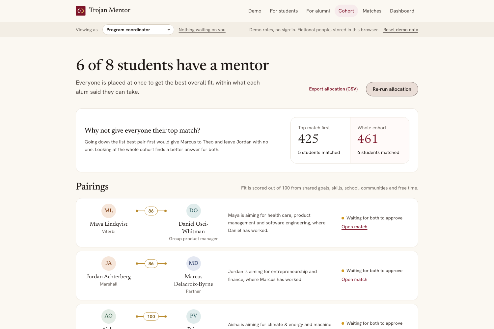
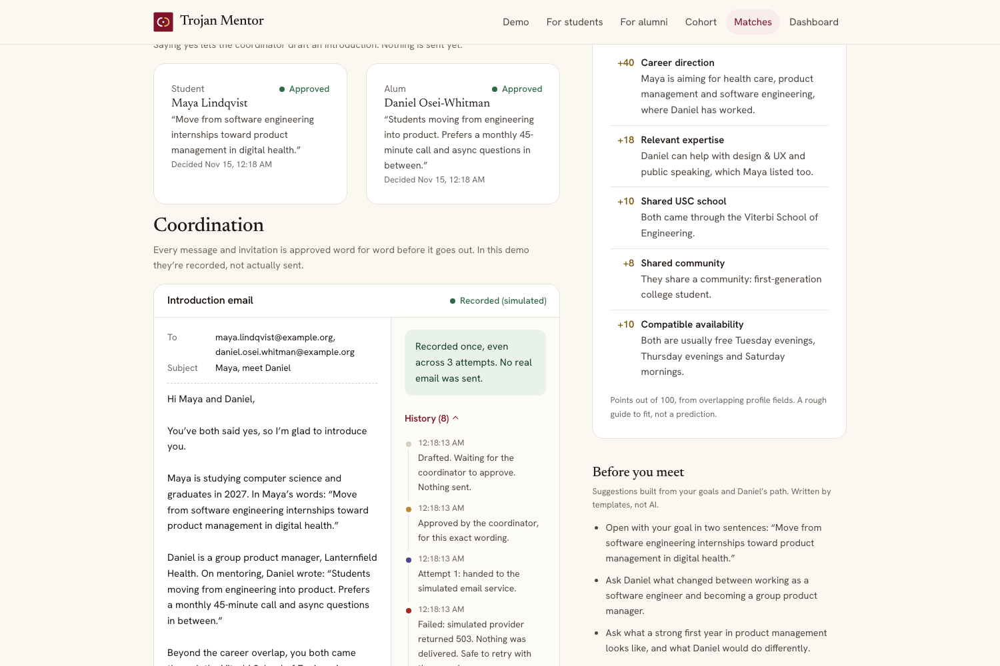

The Trojan Network, activated
Opt-in alumni mentorship for USC students, matched across the whole cohort and carried from first hello to real milestones.
The friction
Students who most need a mentor are often the least likely to cold-message one. That's especially true for first-generation and transfer students.
The product
Live: trojan-mentor.vercel.app. No sign-in, fictional cohort, works without any API key.
Technical & AI execution
Gemini with a strict JSON schema, only with consent and a server-side key. Otherwise a deterministic parser labelled “not AI.” Injection text is flagged and dropped.
0–100 points from career direction, expertise, school, communities and availability. Every point is explained. Not a probability.
Maximizes total fit with capacity, consent, opt-in, visibility, exclusions and a threshold. Unmatched students get honest reasons.
Exact drafts, required approvers, attempts, history, idempotency keys. Email and calendar are simulated.
Why global optimization
Verified against brute-force enumeration on 300 random cohorts.

Trust by design

Feasibility & implementation
Built for a program office: “waiting on you” inbox, exact what-ifs for recruiting (“one more seat for Elena matches Kenji”), CSV export.
Pilot path with Student Government: one school or student organization, a coordinator-run cohort of 20–40 students and opted-in alumni.
Next: real auth, server persistence (Postgres schema ready), real email and calendar, live Gemini with consent, and outcome measurement.
Today: browser-only storage, simulated roles and delivery, hand-tuned weights, fictional data, no USC or PeopleGrove integration.
Trojan Mentor
Live demo: trojan-mentor.vercel.app
Code: github.com/architguptadev/trojan-mentor